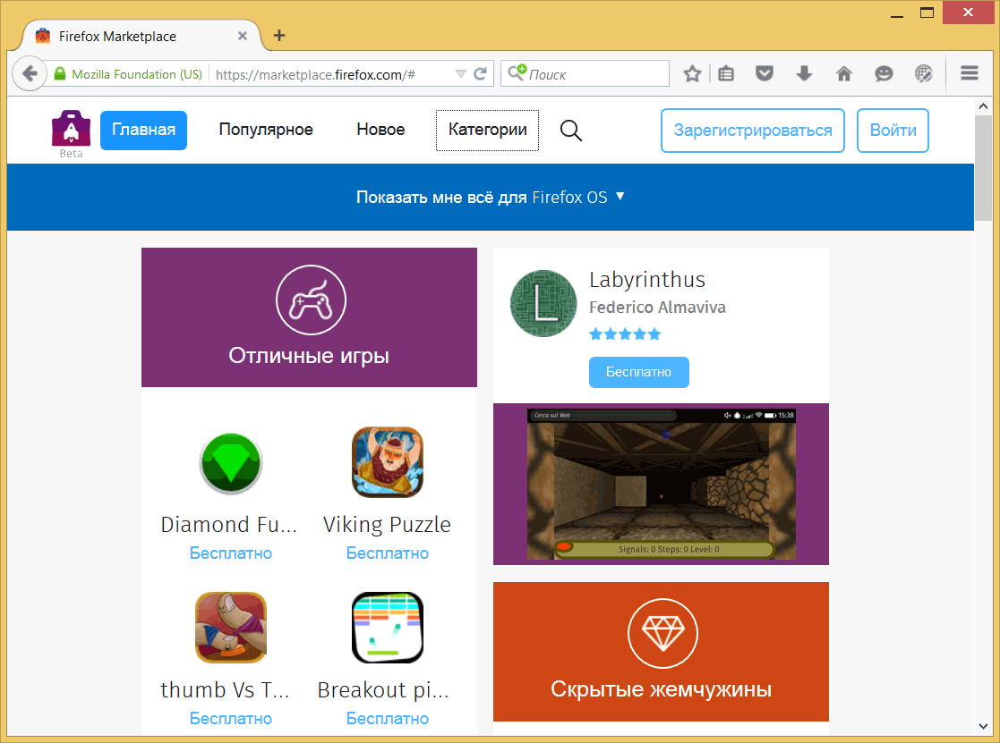
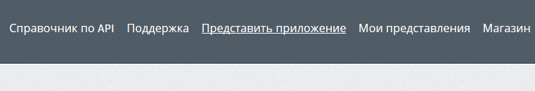
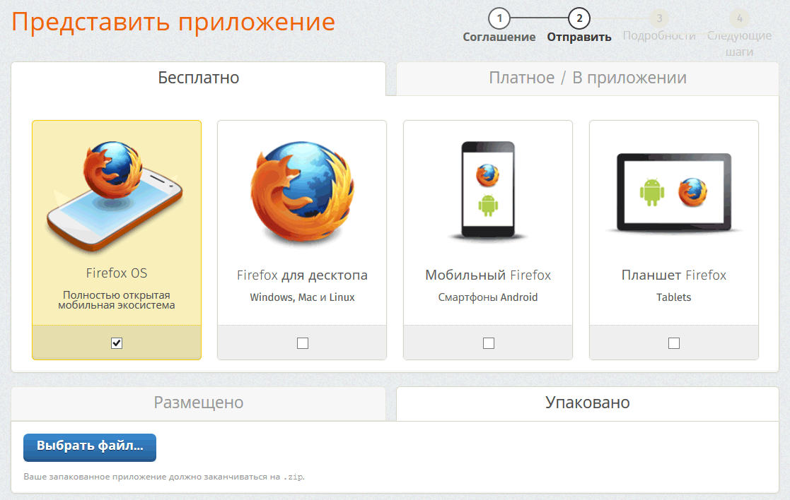
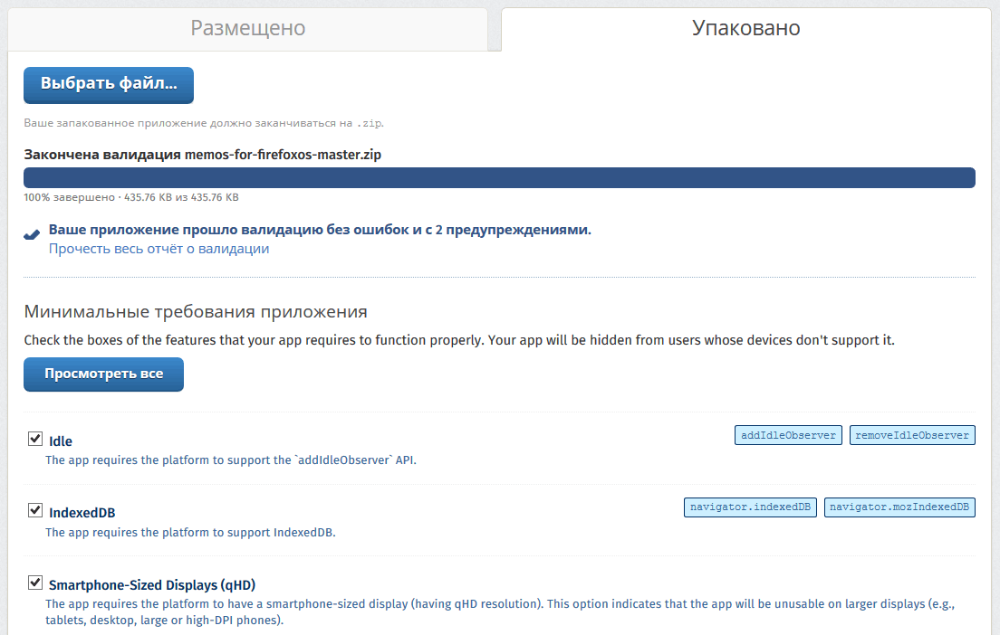
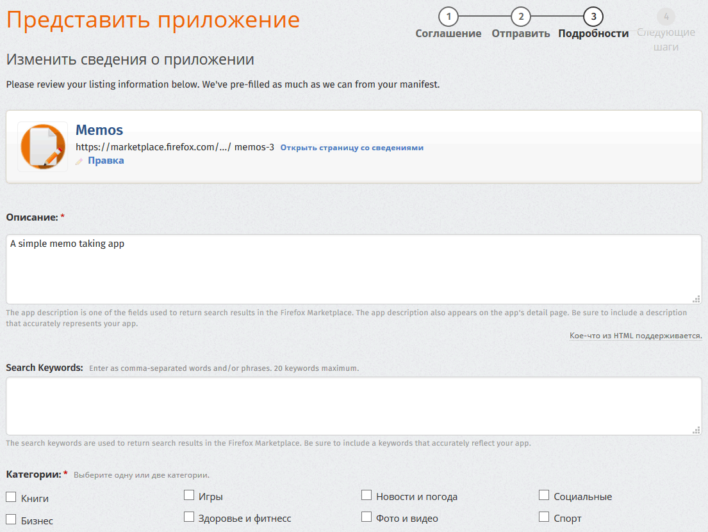

Firefox Marketplace

Firefox Marketplace
Firefox Marketplace представляет собой интернет-магазин, в котором можно купить или скачать приложения для Firefox OS, Firefox и Firefox для Android. Это основной канал дистрибуции приложений Firefox OS, но вы не обязаны его использовать. Если хотите распространять приложения вне Marketplace, читайте предыдущую главу.
Чтобы разместить ваши приложения на Marketplace, вы должны идентифицироваться через Mozilla Persona. Просто нажмите на ссылку Зарегистрироваться и следуйте инструкциям. После идентификации вы будете готовы отправлять приложения в Firefox Marketplace.
Контрольный список, прежде чем вы подумаете об отправке приложения в Marketplace
Все приложения отправленные в Marketplace проходят через процесс утверждения (это не так страшно, как звучит!). Размещённым веб-приложениям пройти легче, чем привилегированным приложениям, поскольку они используют менее уязвимые API. Перед отправкой заявки в Marketplace проверьте критерии отбора. Наиболее важные части (ИМХО).
- У устройств на Firefox OS нет кнопки назад подобно Android и десктопному браузеру. Если пользователь переходит к экрану внутри вашего приложения, где нет никакой возможности вернуться назад в прежнее место (т. е. пользователь застревает), то ваше приложение будет отклонено.
- Ваше приложение должно содержать иконку 60x60 и чёткое описание.
- Ваше приложение должно делать то, что сказано в описании. Говорить одно, а показывать другое — ещё один способ получить отказ.
- Если ваше приложение запрашивает разрешение, то вы должны его использовать где-то в своём коде. Маркировать ваше приложение как привилегированное и не использовать любые привилегированные API приведёт к тому, что ваше приложение будет отклонено с запросом, чтобы вы отправили его заново как обычное приложение.
- Ваше приложение должно иметь политику конфиденциальности.
- Файлы манифеста должны работать с корректным MIME-типом и на том же домене, что и размещенные приложения.
Есть и другие критерии, описанные в ссылке выше — и правила могут измениться без предварительного уведомления. Прочитайте эту страницу, это стоит вашего времени. Приложение могут отклонить из-за мелочи, которую легко исправить, но это огромная трата времени. Лучше сделать всё правильно с первого раза (рецензенты любят утверждать хорошие приложения!).
Подготовка приложения для отправки
Необходимые шаги для отправки приложения в Marketplace различаются в зависимости от того, размещённое у вас или упакованное приложение. Размещённое приложение просто должно быть доступно в Интернете с корректным MIME-типом и манифестом. Упакованные приложения нужно сжать используя zip и это заслуживает особого внимания.
Многие разработчики совершают ошибку, выбирая папку содержащую файлы приложения и архивируя её. Это приводит к тому, что zip-файл содержит папку, а внутри папку с содержимым приложения. Это неверный способ упаковки приложения для Firefox OS. Правильный способ упаковки файлов и папок состоит в том, чтобы манифест оказался в корне архива. На Mac OS X и Linux вы можете использовать терминал для перехода к папке приложения и использовать команды вроде zip -r myapp.zip * для правильного сжатия, как показано на скриншоте ниже.

Правильно сжатые файлы
Этот zip-файл мы отправляем в Marketplace.
Отправка приложения в Marketplace
Теперь, когда ваше приложение готово и вы твёрдо уверены что оно отвечает критериям отбора, настало время отправить его в Marketplace. Для этого перейдите в раздел Разработка приложений. Внутри страницы щёлкните на Представить приложение в верхнем меню.

Представить приложение
Эта ссылка приведёт вас к форме добавления новых приложений, как показано на скриншоте ниже.

Отправка нового приложениям
На этом экране вам предложат выбрать следующие варианты:
- размещённое или упакованное приложение;
- бесплатное или платное (или со встроенными покупками);
- для какого типа устройств доступно (Firefox OS, Firefox для десктопа, мобильный Firefox, планшет Firefox).
После выбора передвигаемся ко второму экрану. В этой книге мы делаем упор на упакованные приложения, но работа с размещёнными приложениями похожа.
В дальнейшем тексте предполагаем, что вы отправляете бесплатное упакованное приложение для Firefox OS. В этом случае вы должны загрузить zip-файл подготовленный в предыдущем разделе.
После загрузки файла, он подвергается автоматической обработке и в отчёте показывает несколько вариантов.

После загрузки архива
Из скриншота выше видно, что приложение, которое я отправил в Marketplace не содержит ошибок, но есть предупреждения. Не обращая внимания на предупреждения, проверьте минимальные требования для этого приложения. В нашем случае галочка с пункта Smartphone-Sized Displays (qHD) должна быть снята, потому что наше приложение адаптируется к любому размеру экрана.
Следующий шаг называется Шаг № 3: Подробности на котором вы заполняете информацию о вашем приложении, например категории, описание, скриншоты и др.

Заполнение деталей
После заполнения всех деталей происходит процесс отправки. Теперь остаётся только ждать одобрения от рецензентов Marketplace. Поздравляем, вы загрузили приложение на Firefox OS!!!
На странице Мои представления вы можете проверить состояние ваших приложений и изменить информацию, если это необходимо.
Чтобы узнать больше о подаче приложений на Firefox Marketplace прочитайте эту статью на MDN.
Резюме
Поздравляем!!! Теперь у вас есть новое приложение на Firefox Marketplace и вы освоили новый рынок!
Надеюсь, вам понравилось это краткое руководство. Я планирую обновлять и расширять это руководство часто — так что держите ваши глаза открытыми и зарегистрируйтесь для обновлений. Если вы скачали эту книгу с Leanpub то всё хорошо, потому что вы будете получать сообщения об обновлениях по почте. Если вы скачали её где-то ещё, то перейдите на официальную страницу в Leanpub и зарегистрируйте адрес электронной почты. Это бесплатно и, нет, вы не будете получать спам. Обещаю.
Пожалуйста, скажите, что вы думаете об этой книге. Я писал её ночами напролёт перед конференцией, так что можете сделать вывод, насколько я люблю этот проект и хотел бы увидеть его успех. Обратная связь доступна через мой аккаунт Twitter @soapdog и по электронной почте fxosquickguide@andregarzia.com. Моя домашняя страница http://andregarzia.com.
Теперь, когда вы стали частью группы создателей приложений на Firefox OS, станьте частью большого сообщества Mozilla. Помогите сохранить Интернет свободным и открытым пользователями для пользователей. Присоединяйтесь к нам на http://www.mozilla.org/contribute/ и помогите Firefox OS расти!

Все материалы сайта доступны по лицензии Creative Commons «Attribution-NonCommercial» («Атрибуция — Некоммерческое использование») 4.0 Всемирная, если не указано иное.